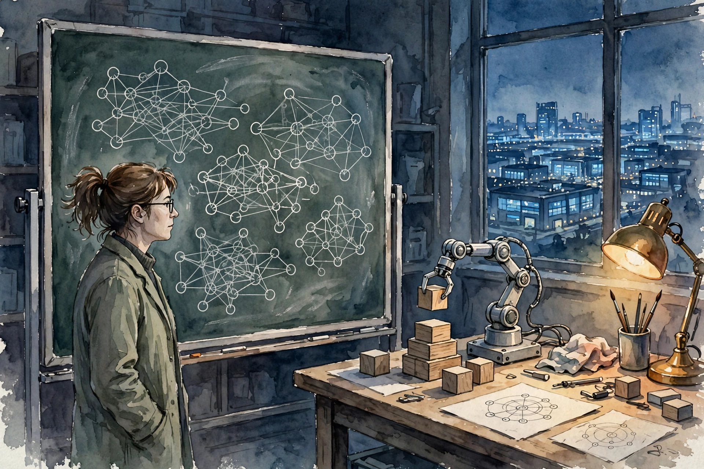

Dwarkesh Patel · Ep 2 · Companion
Ilya Sutskever
The co-founder of OpenAI and SSI returns with an update: the age of scaling is over, the age of research is back, and the next capabilities will come from agents generating their own data. This companion follows the full conversation in order, from RL environments to value functions to what superintelligence might cost.

Illustration. The age of research: a lone investigator, a learning machine, and a horizon of data centers. AI-generated watercolor made for this page.
Watch. The official episode video. Use the chapter menu above to jump to any section of this companion as you listen.
The Wisdom Index: every nugget in this companion
§1 · Opening
The Slow Takeoff Feels Normal
Source fact
Ilya opens with disbelief at the normalcy of it all. AI straight out of science fiction is here, and the world treats it as background noise. Society now invests about 1 percent of GDP in AI, a figure that would once have felt like a civilization-scale event. Instead it feels like Tuesday.
We get used to things pretty fast, it turns out.
Ilya Sutskever on the slow takeoff · Episode transcript §1
The abstraction hides the scale. The number arrives as headlines, one company announcing one dollar amount, and the brain files it under news. Nothing about the lived texture of the week changes, so the magnitude never lands.
Nugget 1 · Perception
Normalcy is not safety
What happened. A science-fiction economy arrived at 1 percent of GDP and felt like nothing. Habituation outran comprehension.
Why it matters. Humans calibrate to the rate of change, not the level. A slow takeoff can be world-historical and still feel boring.
The principle. When a number stops shocking you, recompute it from scratch. Familiarity is not the same as understanding.
§2 · Research vs scaling
From the Age of Scaling to the Age of Research
Source fact
Ilya periodizes deep learning. From 2012 to 2020 was the age of research. From 2020 to 2025 was the age of scaling, give or take error bars on the years. Now, he argues, the field returns to the age of research.
Scaling had a social cost. The recipe worked so well that it "sucked out all the air in the room": everyone scaled, few researched, and the field converged on one playbook. The big realization of pre-training was that the recipe itself was good. Once the recipe is known, the edge moves back to new ideas.
Three eras of deep learning
Hover any block for detail. Ilya adds error bars to the year boundaries.
Source: Dwarkesh Patel interviews Ilya Sutskever, episode transcript §2. Year boundaries are Ilya's, with his stated error bars.
Nugget 2 · Strategy
Name the era you are in
What happened. When one recipe works, the field stops inventing. Ilya reads the end of easy scaling gains as a regime change, not a slowdown.
Why it matters. Scaling-era tactics (more of the same) underperform in a research era. The winning move changes with the regime.
The principle. Ask which era you are in before you copy the winners. Yesterday's playbook is today's trap.
§3 · Reinforcement learning
RL Is the New Scaling Axis
Source fact
People talk about scaling data, parameters, and compute. Ilya points at a fourth axis: reinforcement learning. Labs now spend more compute on RL than on pre-training, by some accounts, because long rollouts consume enormous compute for relatively small amounts of learning per rollout.
The new bottleneck is the environment. Teams now exist whose whole job is to produce fresh RL environments and add them to the training mix: new tasks, new verifiers, new curricula. The degrees of freedom are huge, and choosing them well is the emerging craft.
This is amazing. You've got to scale more. Keep scaling.
Ilya Sutskever ventriloquizing the scaling era · Episode transcript §2
Interpretation
Notice the shift in what "scale" means. Pre-training scaled a fixed recipe over fixed data. RL scales the generation of new experience itself. The model begins to produce its own curriculum.
Nugget 3 · Scaling
Find the new scaling axis
What happened. Data, parameters, and compute were the old axes. RL environments are the new one, and the labs retool around it.
Why it matters. Every exhausted axis looks like the end of progress until someone finds the next one. Progress is axis discovery.
The principle. When the current dimension flattens, search for a new dimension before you declare the limit.
Toy: the scaling axes
Pick an axis to see what the scaling era scaled, and what the research era must invent.
Built from Ilya's framing in transcript §3. Characterizations are the builder's summary of the episode's claims.
§4 · Data and skill
The Competitive Programmer
Source fact
Ilya offers an intuition pump. One student practices competitive programming for 10,000 hours: every problem solved, every algorithm memorized, every proof technique at the fingertips. Another dabbles for 100 hours. Both look fluent, but the deep one generalizes in a way the dabbler cannot.
Training works the same way. Data augmentation can manufacture more problems, and training on the augmented set builds the competitor with every proof technique "right at its fingertips." Depth of preparation, not just hours, is what transfers.
Interpretation
This reframes the data debate. The question is how much structure the data forces the model to internalize, not just how much data there is. Deliberate practice beats exposure.
§5 · Self-correction
The Value Function
Source fact
How does a teenage driver learn without a teacher in the passenger seat? Ilya's answer: the value function. Lose a piece in chess and you know at once the move was bad, without playing out the game. The value function short-circuits the wait until the end.
Humans carry a remarkably steady internal sense of doing well or badly, with narrow exceptions around addiction. That internal signal lets the teenager self-correct from experience alone. For AI, building an equivalent is the open problem: models today lack a reliable way to judge their own partial progress.
Nugget 4 · Learning
Short-circuit the wait
What happened. Chess players and teenage drivers judge a move mid-stream. They do not need the final score to know they blundered.
Why it matters. Learning speed depends on feedback latency. A good internal value function turns every step into a lesson.
The principle. Build the inner scoreboard before you scale the outer training. Fast feedback beats big batches.
§6 · Sample efficiency
Evolution's Head Start
Source fact
A human after 15 years, on a tiny fraction of pre-training data, knows things more deeply than our models and avoids mistakes they still make. Part of the answer may be evolution: a 3-billion-year search that front-loaded the most useful information possible into the architecture.
Vision, hearing, locomotion, dexterity: evolution gave strong priors for all of them. Children learn to drive after about 10 hours of practice, which looks miraculous until you count the pre-installed visual system. The sample efficiency is inherited, not learned.
Nugget 5 · Priors
Respect evolution's prior
What happened. Fifteen years of childhood beats petabytes of training on some tasks, because the brain ships with 3 billion years of R and D inside.
Why it matters. Sample efficiency comparisons that ignore the prior mislead. The human starts the race halfway down the track.
The principle. Count the pre-training you did not pay for. Every learner stands on a prior. Name it before you benchmark.
§7 · Ideas and compute
Ideas Need Compute to Convince
Source fact
Ilya names two bottlenecks: ideas, and the ability to turn them into working systems, which means compute and engineering. In the 1990s, good ideas died because no one could afford the demo that would prove them. The transformer itself was built on 8 to 64 GPUs per experiment, about two of today's GPUs.
Today the numbers stun. Public estimates put labs like OpenAI at $5 to 6 billion a year on experiments alone, separate from inference. SSI raised $3 billion, which Ilya calls a lot in absolute terms but small next to the giants. He even mentions turning down a Meta acquisition offer at a $32 billion valuation.
What research costs now
Hover any bar for detail. Experiment budgets, not total company spend.
Source: Dwarkesh Patel interviews Ilya Sutskever, episode transcript §7. OpenAI figure is a public estimate cited on the episode.
Nugget 6 · Resources
Ideas need compute to convince
What happened. The transformer needed only dozens of 2017 GPUs to prove itself. Today, proving the next idea costs billions a year in experiments.
Why it matters. The price of a convincing demo sets who gets to play. As the price rises, the field centralizes.
The principle. Budget for the proof, not just the idea. An untested idea is a rumor with math.
Nugget 7 · Competition
Small teams can still win
What happened. SSI holds $3 billion against rivals spending that much per year, and Ilya still bets on ideas plus enough compute to test them.
Why it matters. Compute is necessary but the idea is the scarce input. A small team with the right idea and enough proof budget stays in the game.
The principle. Do not confuse the budget with the breakthrough. Fund the smallest test that could change your mind.
§8 · The future
AGI, Safety, and Five to Twenty Years
Source fact
On the term AGI, Ilya is deflationary: a human being is not an AGI. Humans lack vast knowledge and rely on continual learning instead. The interesting question is what continual learning looks like for a safe superintelligence, since today's models mostly do not do it.
His timeline: 5 to 20 years for AI to learn as well as a human and then become superhuman. On safety, he notes a first small step, OpenAI and Anthropic beginning to collaborate as fierce competitors, and argues governments and frontier companies will both shape what happens. Rapid economic growth looks possible. The open question is which rules win.
He closes on a distinctive claim about safety research. He cannot think of another engineering discipline where the end artifact was made safer mostly by thinking about safety, rather than by crash-testing the real thing. AI safety may be the first field where reasoning has to do the work that wreckage did elsewhere.
The episode in seven lines
- A science-fiction economy at 1 percent of GDP feels like nothing. Habituation is not comprehension.
- The age of scaling (2020-2025) sucked the air out of the room. The age of research is back.
- RL is the new scaling axis: more compute now goes to RL than to pre-training, and environments are the bottleneck.
- Depth beats exposure: the 10,000-hour competitor generalizes where the 100-hour dabbler cannot.
- The value function short-circuits the wait. Fast inner feedback is the learning speedup.
- Evolution front-loaded the priors. Count the 3-billion-year head start before you benchmark sample efficiency.
- Five to twenty years to human-level and beyond. Safety may have to be won by thought, not by wreckage.
Distilled from Dwarkesh Patel's interview with Ilya Sutskever (video id aR20FWCCjAs). All figures are the guest's statements or cited estimates from the episode transcript.